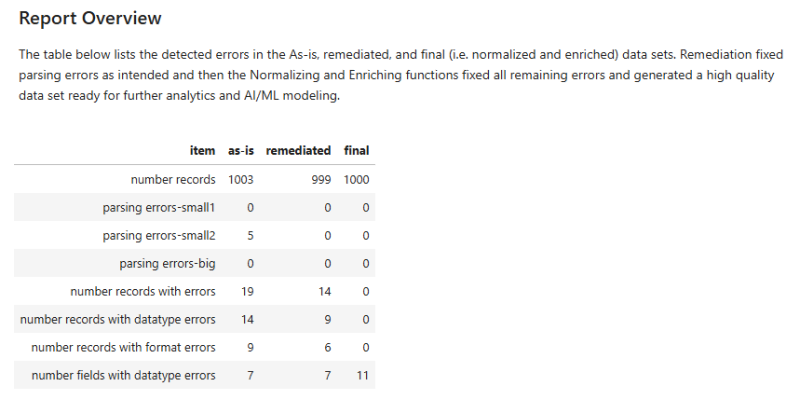

Compare Results in Jupyter#
Make Jupyter Notebook comparing and assessing data before and after VerityPy processing.
Goal#
Use the stored files from Normalize & Enrich guide to showcase how VerityPy makes high quality data with low effort and straightforward design from source data with multiple different types of errors inclusing some so severe they cannot be handled with most data tools.
Objectives#
Use Jupyter Notebook to make report with charts and comments
Read stored data files from as-is, remediated, and final data sets
Read stored JSON files from as-is, remediated, and final VerityPy QualityAnalysis objects
Compare errors among three versions
Describe improvements going from as-is to remediated to final
Show enrichment fields in final set and how they can be used in downstream analytics and modeling
Jupyter Notebook#
See example Jupyter file ‘VerityPy_compare.ipynb’ at the Techniks Interlytics support web site. This is the same Jupyter file used to compare results from the VerityDotNet library. Since both VerityPy and VerityDotNet save results in similar schemas only the file references need to change within the Jupyter file. Small variations in the schemas are handled by the VerityPy library used in the Jupyter code.
A link to HTML version of charts and tables is:
See Jupyter Report
The overview in this report shows a table listing errors discovered and a chart of the before and after Field Quality metric.
